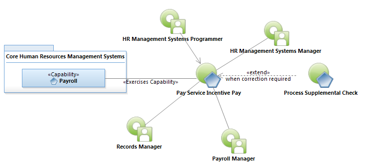
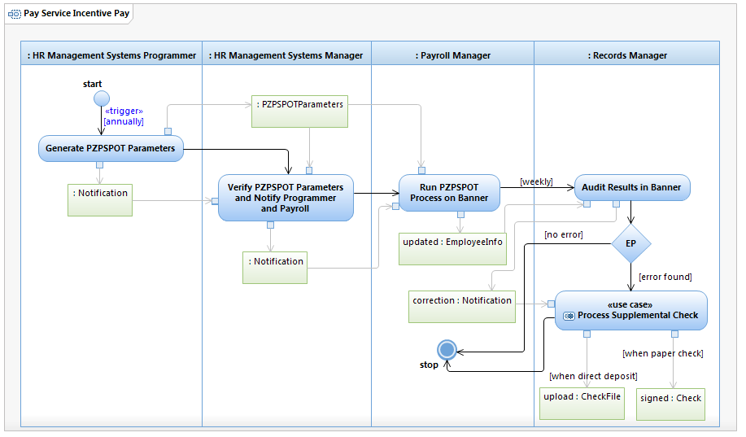

Use Case Model: Pay Service Incentive Pay
Architect: Aaron Brown, IT Enterprise Architect Senior
Date Last Modified: 11/13/2012
User Review: Ingrid Whitley, Payroll Manager
Date: 11/13/2012
Pay employees to recognize their longevity in service to the City (requires approval of funding by City Council).
Follow link to Role Definitions

Use Case Model: Pay Service Incentive Pay
Follow link to Process Supplemental Check

Activity Model: Pay Service Incentive Pay
Activity Documentation
| Activity | Documentation |
|---|---|
| Audit Results in Banner | Randomly choose a sampling of records and check to see if the proper allocations are made. |
Note: When the activity is self explanatory no documentation is provided.